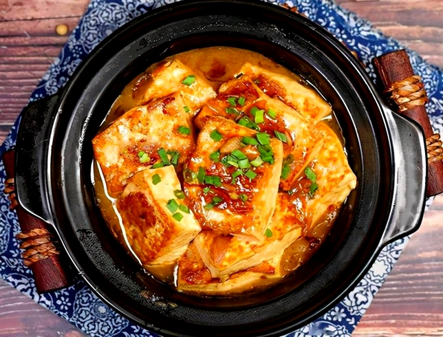
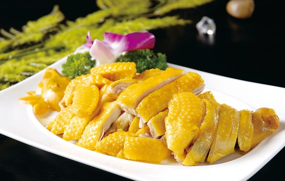
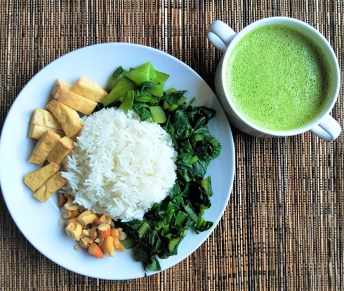

Les Hakkas, littéralement « les familles visiteuses », sont un groupe ethnique Han chinois qui a une histoire marquée par des vagues successives de migrations. Leur origine remonte à la Chine du Nord, où ils faisaient partie des premières populations Han avant d’être poussés vers le sud en raison des conflits, des guerres et des changements politiques. Ces migrations ont commencé dès la dynastie Han (202 avant J.C. - 200), mais se sont intensifiées au fil des siècles, particulièrement pendant la période des Tang (618 - 907) et des Song (960 – 1279). Ce mouvement migratoire s’est poursuivi jusque dans les périodes plus récentes, ce qui a conduit les Hakkas à s’établir dans des régions montagneuses comme le Fujian, le Guangdong, le Jiangxi, ainsi qu’à Taïwan et au-delà, dans des pays comme la Malaisie et l'Indonésie.
À travers ces migrations, les Hakkas ont conservé une forte identité culturelle, caractérisée par leur langue, leurs traditions et leur cuisine unique. En raison de leur statut de migrants, ils ont souvent été perçus comme un groupe distinct et parfois marginalisé par les populations locales. Cependant, leur résilience et leur capacité d'adaptation leur ont permis de s’imposer dans les régions où ils se sont installés, contribuant de manière significative à la culture, l’économie et la politique de ces régions. Aujourd'hui, les Hakkas sont présents dans de nombreuses communautés à travers le monde, notamment dans les diasporas d'Asie du Sud-Est, tout en continuant de maintenir avec une grande fierté leurs traditions et leur héritage, même au-delà des frontières de la Chine.
Le cadre géographique des Hakkas est intrinsèquement lié à leur histoire de migrations et aux régions où ils se sont installés. Ces vagues de migration successives les ont amenés à s'établir principalement dans des régions montagneuses et rurales. Cette dispersion géographique a façonné une cuisine marquée par des pratiques alimentaires et des ingrédients spécifiques à ces terres et à leur mode de vie.
Les régions montagneuses et isolées où les Hakkas se sont établis ont fortement influencé leur cuisine, en raison des conditions de vie difficiles et de la difficulté à obtenir des ingrédients frais. Pour préserver leurs aliments, ils ont développé des méthodes de conservation telles que la fermentation, la salaison et le séchage, en privilégiant des produits durables comme le tofu, les viandes séchées et les légumes fermentés, tout en exploitant des racines et des plantes robustes adaptées à des sols moins fertiles. Ainsi, les Hakkas adoptent une approche pragmatique de la cuisine, favorisant la simplicité et la durabilité des plats.
La cuisine des diasporas Hakka à travers le monde a évolué en se mélangeant avec les cuisines locales, créant des variantes uniques qui reflètent les influences des régions d'accueil. Par exemple, en Jamaïque et à Maurice, la cuisine Hakka s’est fusionnée avec les saveurs créoles et indiennes, s'adaptant aux ingrédients locaux et donnant naissance à des plats nouveaux tout en conservant des éléments de son patrimoine culinaire. Cette capacité à intégrer les produits et les techniques locales tout en préservant son identité montre la flexibilité de la cuisine Hakka.
La cuisine Hakka se distingue par sa simplicité, sa rusticité et son goût prononcé. Contrairement à d'autres cuisines chinoises qui utilisent des techniques de cuisson complexes et des saveurs raffinées, la cuisine Hakka met l’accent sur l’utilisation des produits locaux dans leur état le plus naturel. L'accent est mis sur la cuisson à feu doux, la préservation des arômes naturels et la mise en valeur de la texture des aliments.
Les saveurs prédominantes dans la cuisine Hakka sont salées, aromatiques et légèrement amères.
La cuisine Hakka est connue pour son usage modéré mais stratégique de la viande, notamment de la viande de porc, de volaille. La viande de bœuf et le poisson sont assez rares. La viande est souvent braisée, mijotée ou cuite lentement pour maximiser la saveur.
L'utilisation des abats chez les Hakkas est courante en raison de leur approche pragmatique et de l'importance de ne pas gaspiller. Habitués à des ressources limitées, ils intègrent des abats comme le foie, les reins et les tripes dans leurs plats, maximisant ainsi l'utilisation de chaque partie de l'animal.
La production de riz étant limitée en montagne, les patates douces, les racines de taros et les ignames sont beaucoup utilisées.
Pour maintenir leur force physique pendant leur migration vers le sud et face aux conditions de vie difficiles dans les régions inhospitalières, les Hakkas préparaient souvent des plats riches en calories, en protéines et en graisses.
Comparée à d'autres cuisines, comme celle du Jiangsu, la cuisine Hakka ne se distingue pas par son raffinement, car de nombreux plats ont été créés en cours de route, lors de leur fuite de la guerre, et leur vie était difficile en tant que nouveaux arrivants dans le sud. Au-delà de l'apparence, les Hakkas accordent davantage d'importance au contenu des plats qu'à leur présentation.
Le tofu farci Hakka, ou Yong Tau Fu dans sa version Hakka, est un plat emblématique de cette cuisine. Il s'agit de tofu ferme qui est soigneusement creusé et farci de viande hachée, généralement du porc et assaisonnée des herbes. Le tofu farci est ensuite frit, ce qui permet au tofu d'absorber les saveurs de la farce tout en conservant une texture tendre à l'intérieur.
Ce plat serait né d’une adaptation des raviolis, mais sans farine de blé, par les Hakkas lors de leur migration du nord vers le sud. En traversant la région où le blé dominait vers celle où il ne pousse pas, les Hakkas ont dû réinventer certains de leurs plats traditionnels pour s’adapter à de nouveaux ingrédients, tout en conservant l’essence de leur cuisine d’origine.

Le poulet en croûte de sel est un plat emblématique de la cuisine Hakka, apprécié pour sa simplicité et ses saveurs. Il est préparé en enrobant un poulet entier de sel, puis en le cuisant lentement dans cette croûte épaisse. Le sel agit comme une barrière qui emprisonne l'humidité du poulet pendant la cuisson, garantissant que la viande reste tendre et juteuse.
Selon l'histoire, un marchand de sel reçut un poulet vivant en récompense d’un travail bien accompli. Comme le voyage de retour allait durer plusieurs jours, il décida de préparer le poulet et de l’enrober de sel pour en préserver la fraîcheur. Cependant, en chemin, il ne put résister et décida de le cuire directement dans le sel, faute de matériel de cuisine. Le goût étant si délicieux, il en parla à sa femme dès son retour chez lui. Sa femme suivit alors attentivement les étapes et recréa le plat, donnant ainsi naissance au poulet en croûte de sel.

Le Lei cha, ou thé pilé, est une boisson traditionnelle Hakka. Cette boisson, une sorte de soupe ou de thé vert broyé, allie des herbes et des ingrédients solides. Elle est réputée pour ses bienfaits pour la santé, sa richesse en saveurs et sa texture unique.
Le Lei cha est préparé en broyant ou en pilant au mortier un mélange de feuilles de thé vert, de graines de sésame, de cacahuètes, de riz grillé, de menthe et parfois d'autres herbes. Ce mélange est ensuite recouvert d'eau chaude pour créer une boisson épaisse et légèrement amère, mais très nourrissante. Elle est souvent servie avec des accompagnements solides, tels que des légumes, du riz ou des morceaux de viande séchée.
